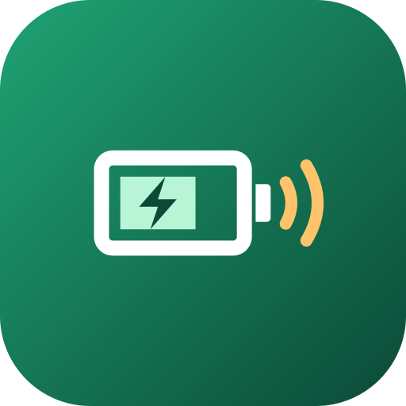
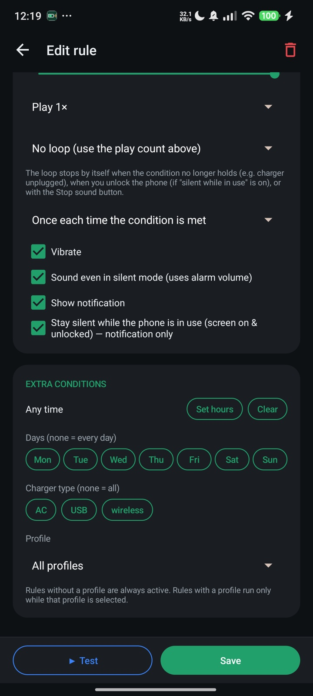
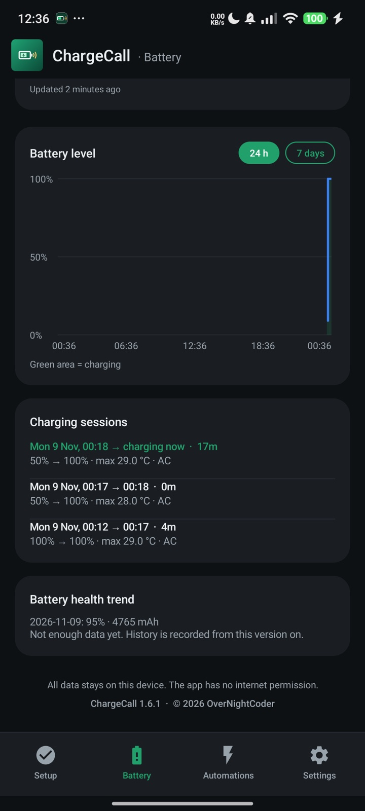
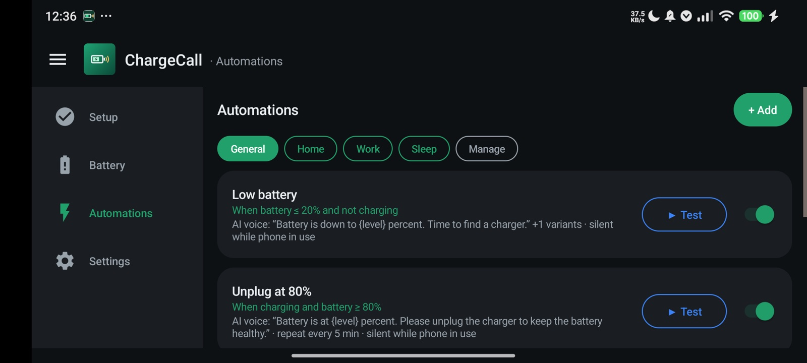
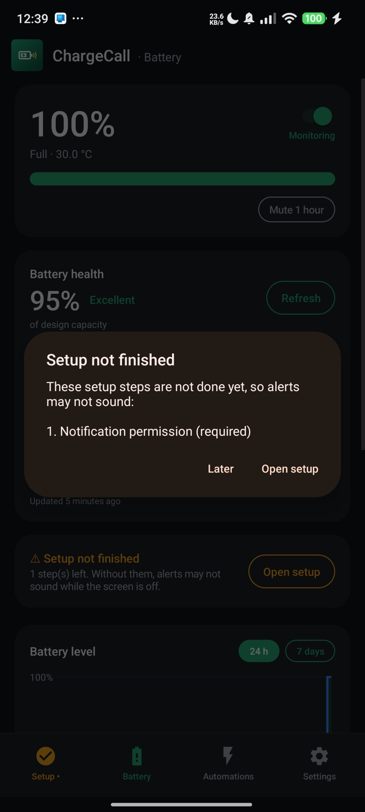
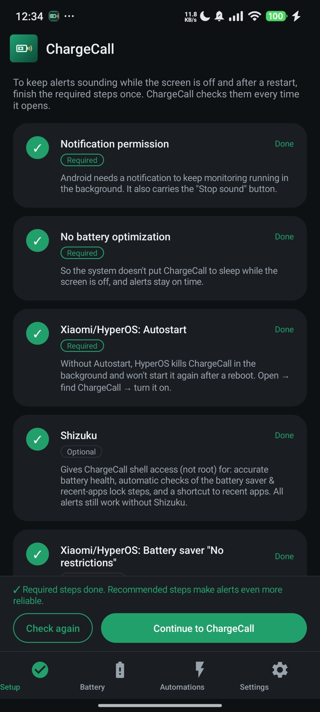
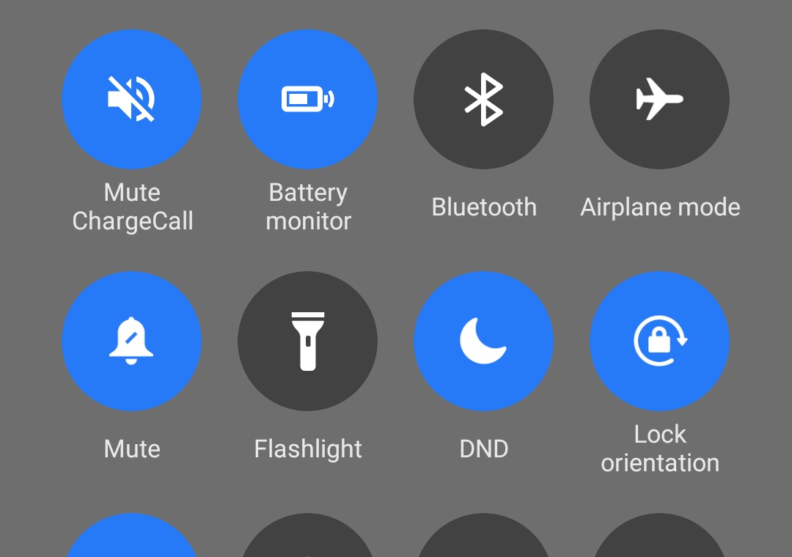

ChargeCallBuat aturan seperti di Automation iPhone: "kalau baterai 20%, bilang cari charger", "ingatkan tiap 5 menit untuk mencabut di 80%", "kalau dicas semalaman, bangunkan". Suaranya bisa dari suara AI, rekaman kamu sendiri, lagu, atau nada dering. Plus kesehatan baterai, riwayat, dan widget. Tanpa internet.
Build rules like iPhone Automations: "at 20%, say find a charger", "remind me every 5 minutes to unplug at 80%", "if it charges all night, wake me". The voice can be the AI voice, your own recording, a song or a ringtone. Plus battery health, history and a widget. No internet.






Baterai turun ke X%, naik ke X% saat dicas, penuh, charger dicolok/dicabut, suhu, cas lambat, suhu naik cepat, baterai tidak bertambah, cas semalaman, kesehatan baterai turun, siklus pengisian.
Drops to X%, reaches X% while charging, full, charger connected/disconnected, temperature, slow charging, fast temperature rise, not increasing, overnight charging, health dropping, charge cycles.
Suara AI (teks ke suara di perangkat) dengan variabel {level}, {suhu}, {sisa_waktu}, {kesehatan}; rekaman suara sendiri; file audio; nada dering; atau getar saja. Atur volume, nada, kecepatan, ulang, loop.
AI voice (on-device text-to-speech) with {level}, {temp}, {time_left}, {health}; your own recording; an audio file; a ringtone; or vibrate only. Volume, pitch, rate, repeat and loop.
Batasi aturan ke jam, hari, dan jenis charger tertentu. Profil (Rumah, Kantor, Tidur…) mengganti satu set aturan dengan satu ketukan.
Limit a rule to certain hours, days and charger types. Profiles (Home, Work, Sleep…) switch whole sets of rules with one tap.
Diam saat HP sedang dipakai (cukup notifikasi), jam tenang, Diamkan 1 jam dari widget atau tile, dan tombol Hentikan suara di notifikasi. Loop berhenti sendiri saat kondisinya lepas.
Silent while the phone is in use (notification only), quiet hours, Mute 1 hour from the widget or tile, and a Stop sound button in the notification. Loops stop by themselves when the condition ends.
Kapasitas penuh saat ini vs desain, siklus, status, tegangan; dengan Shizuku memakai kapasitas yang dipelajari Android. Grafik level, sesi pengisian, tren kesehatan, dan perkiraan "penuh dalam…".
Current full capacity vs design, cycles, status, voltage; with Shizuku it uses the capacity Android learned. Level chart, charging sessions, health trend and "full in…" estimates.
Tidak punya izin internet; semua data di perangkat dan bisa dicadangkan ke file .zip. Layanan latar memakai sekitar 12 MB memori; mesin suara hanya hidup saat bicara.
No internet permission; all data stays on the device and can be backed up to a .zip. The background service uses about 12 MB; the speech engine only runs while speaking.
Halaman Setup terbuka sendiri saat ada langkah wajib yang belum selesai dan memeriksa setiap langkah. Tanpa ini, HyperOS bisa menghentikan peringatan saat layar mati.
The Setup page opens by itself while a required step is missing and checks every step. Without them, HyperOS may stop alerts while the screen is off.
ChargeCall gratis dan tanpa iklan.
Kalau aplikasi ini berguna, kamu bisa traktir kopi lewat Saweria untuk membantu pengembangan berikutnya.
ChargeCall is free and has no ads.
If it helps you, you can buy me a coffee on Saweria to support what comes next.
Tanpa iklan dan tanpa izin internet. Peringatannya berupa aturan yang bisa disusun bebas (kondisi, suara, kapan boleh bunyi), bukan sekadar satu alarm di satu persen.
No ads and no internet permission. Alerts are freely composed rules (condition, sound, when it may sound), not a single alarm at one percentage.
Tidak. Suara dibuat oleh mesin teks-ke-suara di HP (biasanya Speech Services by Google). Suara lain bisa diunduh sekali lewat pengaturan Android, lalu dipakai offline.
No. Speech is produced by the phone's text-to-speech engine (usually Speech Services by Google). Other voices can be downloaded once through Android settings and then work offline.
Tidak ada. ChargeCall tidak punya izin internet; aturan, rekaman, dan riwayat tersimpan di HP dan bisa dicadangkan ke file .zip dari menu Pengaturan.
None. ChargeCall has no internet permission; rules, recordings and history stay on the phone and can be backed up to a .zip from Settings.
Proyek pribadi yang dibagikan langsung di sini. Setiap rilis ditandatangani dengan kunci yang sama dan disertai SHA-256, jadi pembaruan tinggal dipasang di atas versi lama.
A personal project distributed here. Every release is signed with the same key and comes with its SHA-256, so updates install over the previous version.
Periksa opsi aturan: "Diam saat HP sedang dipakai" hanya menampilkan notifikasi bila layar menyala dan tidak terkunci. Cek juga jam tenang, Diamkan 1 jam, profil aktif, dan kondisi jam/hari/charger pada aturan itu. Notifikasinya selalu menyebut alasan diamnya.
Check the rule's options: "Stay silent while the phone is in use" only shows a notification while the screen is on and unlocked. Also check quiet hours, Mute 1 hour, the active profile, and the rule's hour/day/charger conditions. The notification always states why it stayed silent.
Dengan Shizuku, ChargeCall membaca kapasitas penuh yang dipelajari Android dari pengisian nyata; ini angka yang sama yang dipakai sistem. Tanpa Shizuku, angkanya perkiraan dari pengisian terakhir di atas 95% dan bisa meleset beberapa persen. Kapasitas desain diambil dari ROM dan bisa diubah sendiri.
With Shizuku, ChargeCall reads the full capacity Android learned from real charges; it is the same figure the system uses. Without Shizuku it is an estimate from the last charge above 95% and may be off by a few percent. Design capacity comes from the ROM and can be edited.
Angka siklus hanya tersedia bila ROM menyediakannya untuk aplikasi (Android 14+ pada banyak HP Xiaomi). File sistem yang berisi angka itu tidak bisa dibaca tanpa root, bahkan lewat Shizuku.
Cycle count is only available when the ROM exposes it to apps (Android 14+ on many Xiaomi phones). The system files that hold it can't be read without root, even through Shizuku.
Widget: tahan area kosong di layar utama → Widget → ChargeCall. Tile: tarik panel notifikasi, ketuk ikon edit, lalu seret "Battery monitor" dan "Mute ChargeCall" ke atas.
Widget: long-press an empty spot on the home screen → Widgets → ChargeCall. Tiles: pull down the notification shade, tap the edit icon, then drag "Battery monitor" and "Mute ChargeCall" up.
HyperOS mematikan aplikasi latar yang tidak diizinkan. Buka Setup dan selesaikan Autostart dan Penghemat baterai "Tanpa batasan". Notifikasi kecil "Baterai …%" menandakan pemantauan berjalan.
HyperOS kills background apps it hasn't been told to keep. Open Setup and finish Autostart and Battery saver "No restrictions". The small "Battery …%" notification shows monitoring is running.
Suara bawaan mengikuti bahasa HP. Pilih suara lain di Pengaturan → Suara AI → Pilih, atau unduh suara untuk bahasamu lewat "Unduh suara lain".
The default voice follows the phone's language. Pick another voice in Settings → AI voice → Choose, or download a voice for your language with "Download voices".
Pasang APK baru di atas yang lama; aturan, rekaman, dan pengaturan tetap.
Install the new APK over the old one; rules, recordings and settings are kept.
Saran, masukan, atau laporan masalah?
Kirim email — sertakan versi ChargeCall, tipe HP, dan apa yang terjadi.
Suggestions, feedback or a bug?
Send an email — include the ChargeCall version, your phone and what happened.